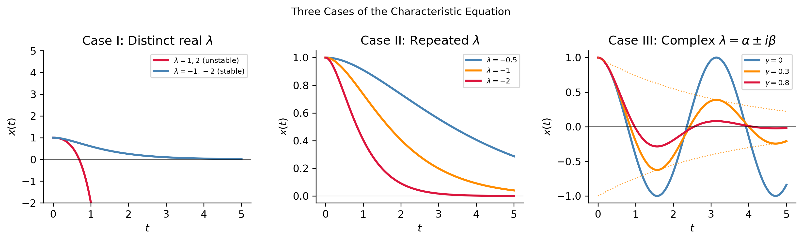
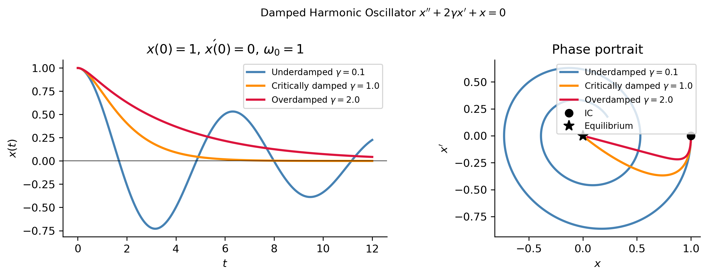
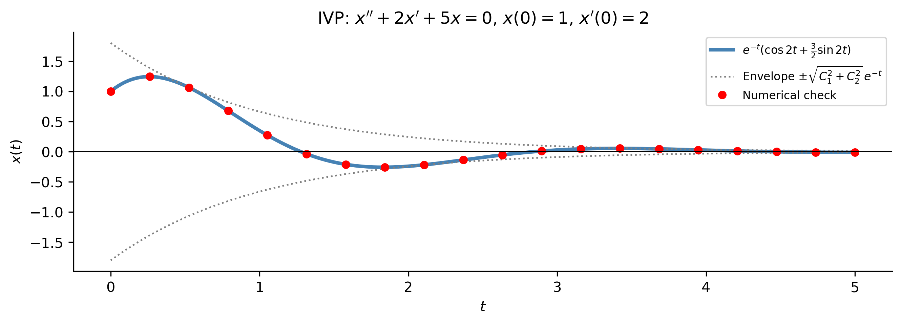
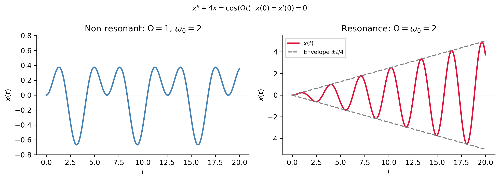
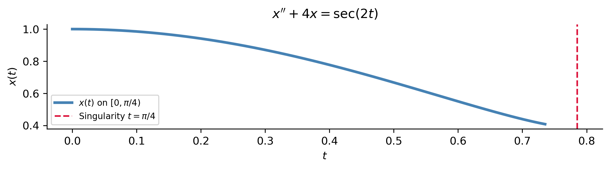

Second-Order Linear Equations
MATH 341 — Notes 4
University of Scranton
2026-05-30
Goals
What We Will Cover
Second-order linear ODEs with constant coefficients and the characteristic equation
Three cases based on the discriminant \(\Delta = p^2-4q\)
Damped harmonic oscillator — overdamped, critically damped, underdamped
Undetermined coefficients — finding particular solutions
Resonance — when forcing frequency equals natural frequency
Variation of parameters — the general method
Note
Sections 2.2 and 2.3 of Logan (2015).
The Setup
Second-Order Linear ODEs with Constant Coefficients
\[x'' + px' + qx = f(t)\]
\(p, q\) real constants; \(f(t)\) the forcing term. Homogeneous when \(f\equiv 0\).
Physical models encoded by this single equation:
| Application | Form |
|---|---|
| Simple harmonic oscillator | \(x'' + \omega^2 x = 0\) |
| Damped oscillator | \(x'' + 2\gamma x' + \omega^2 x = 0\) |
| Forced damped oscillator | \(x'' + 2\gamma x' + \omega^2 x = F_0\cos(\Omega t)\) |
| RLC circuit | \(LQ'' + RQ' + Q/C = E(t)\) |
General solution structure (Superposition Principle): \[\boxed{x(t) = x_h(t) + x_p(t)}\]
- \(x_h\) = general solution of homogeneous equation (\(f=0\))
- \(x_p\) = any particular solution of the full equation
The Characteristic Equation
For the homogeneous equation \(x''+px'+qx=0\), try the ansatz \(x(t)=e^{\lambda t}\):
\[\lambda^2 e^{\lambda t} + p\lambda e^{\lambda t} + q e^{\lambda t} = 0\]
Divide by \(e^{\lambda t}\neq 0\):
\[\boxed{\lambda^2 + p\lambda + q = 0} \qquad \text{(characteristic equation)}\]
Eigenvalues by the quadratic formula: \[\lambda = \frac{-p \pm \sqrt{\Delta}}{2}, \qquad \Delta = p^2 - 4q\]
Eigenvalues of an ODE
\(\lambda\) is the value for which \(e^{\lambda t}\) solves the ODE — the modes of response. This is the ODE analogue of a matrix eigenvalue; the two notions converge when we rewrite second-order ODEs as first-order systems (Chapter 3).
The Three Cases
Case I — Distinct Real Eigenvalues (\(\Delta > 0\))
Two distinct real roots \(\lambda_1 \neq \lambda_2\).
\[\boxed{x(t) = C_1 e^{\lambda_1 t} + C_2 e^{\lambda_2 t}}\]
Example 1
\(x'' - 3x' + 2x = 0\)
\(\lambda^2 - 3\lambda + 2 = (\lambda-1)(\lambda-2) = 0 \;\Rightarrow\; \lambda_1=1,\;\lambda_2=2\)
\(x(t) = C_1 e^t + C_2 e^{2t}\)
Stability from the sign of the eigenvalues:
| Eigenvalues | Behavior |
|---|---|
| Both negative | Stable: solutions \(\to 0\) |
| Both positive | Unstable: solutions \(\to\infty\) |
| Opposite signs | Saddle: one mode grows, one decays |
Case II — Repeated Eigenvalue (\(\Delta = 0\))
One repeated root \(\lambda_1 = -p/2\). Second solution: \(t\,e^{\lambda_1 t}\) (reduction of order).
\[\boxed{x(t) = (C_1 + C_2\,t)\,e^{\lambda_1 t}}\]
Example 2
\(x'' - 4x' + 4x = 0\)
\(\lambda^2 - 4\lambda + 4 = (\lambda-2)^2 = 0 \;\Rightarrow\; \lambda_1=2\) (repeated)
\(x(t) = (C_1 + C_2 t)\,e^{2t}\)
This is the critical damping case — the boundary between oscillatory and non-oscillatory behavior.
Case III — Complex Conjugate Eigenvalues (\(\Delta < 0\))
Complex roots \(\lambda = \alpha \pm i\beta\) where \(\alpha = -p/2\), \(\beta = \sqrt{4q-p^2}/2\).
Use Euler’s formula \(e^{i\beta t} = \cos\beta t + i\sin\beta t\) to get real solutions:
\[\boxed{x(t) = e^{\alpha t}(C_1\cos\beta t + C_2\sin\beta t)}\]
Example 3
\(x'' + 2x' + 5x = 0\)
\(\lambda = (-2\pm\sqrt{4-20})/2 = -1\pm 2i \;\Rightarrow\; \alpha=-1,\;\beta=2\)
\(x(t) = e^{-t}(C_1\cos 2t + C_2\sin 2t)\)
| \(\alpha\) | Behavior |
|---|---|
| \(\alpha < 0\) | Underdamped: oscillations decay to \(0\) |
| \(\alpha = 0\) | Undamped: pure sustained oscillation |
| \(\alpha > 0\) | Oscillations grow (rare in passive systems) |
The Three Cases: Visual Summary
The Damped Harmonic Oscillator
Equation and Classification
\[x'' + 2\gamma x' + \omega_0^2\,x = 0\]
Characteristic equation: \(\lambda^2 + 2\gamma\lambda + \omega_0^2 = 0 \;\Rightarrow\; \lambda = -\gamma \pm \sqrt{\gamma^2-\omega_0^2}\)
| Regime | Condition | Eigenvalues | Behavior |
|---|---|---|---|
| Overdamped | \(\gamma > \omega_0\) | Two distinct negative reals | Exponential decay |
| Critically damped | \(\gamma = \omega_0\) | Repeated \(\lambda=-\gamma\) | Fastest non-oscillatory decay |
| Underdamped | \(\gamma < \omega_0\) | \(-\gamma\pm i\omega_d\) | Decaying oscillation |
Damped natural frequency: \(\omega_d = \sqrt{\omega_0^2 - \gamma^2}\)
Underdamped solution: \[x(t) = e^{-\gamma t}(C_1\cos\omega_d t + C_2\sin\omega_d t) = A\,e^{-\gamma t}\cos(\omega_d t - \phi)\]
where amplitude \(A = \sqrt{C_1^2+C_2^2}\) and phase \(\phi = \arctan(C_2/C_1)\).
Damped Oscillator: Time Series and Phase Portrait

IVP Example — Complex Eigenvalues
Example 4. Solve \(x''+2x'+5x=0\), \(x(0)=1\), \(x'(0)=2\).
Step 1 — Characteristic equation: \[\lambda^2+2\lambda+5=0 \;\Rightarrow\; \lambda = -1\pm 2i \quad (\alpha=-1,\;\beta=2)\]
Step 2 — General solution: \[x(t) = e^{-t}(C_1\cos 2t + C_2\sin 2t)\]
Step 3 — Apply ICs: \[x(0) = C_1 = 1\] \[x'(0) = -C_1 + 2C_2 = 2 \;\Rightarrow\; C_2 = \tfrac{3}{2}\]
\[\boxed{x(t) = e^{-t}\!\left(\cos 2t + \tfrac{3}{2}\sin 2t\right)}\]
\(\displaystyle x{\left(t \right)} = \left(\frac{3 \sin{\left(2 t \right)}}{2} + \cos{\left(2 t \right)}\right) e^{- t}\)
IVP Solution Plot

Nonhomogeneous Equations
The Method of Undetermined Coefficients
\[x'' + px' + qx = f(t), \qquad x = x_h + x_p\]
Find \(x_p\) by guessing its form from the form of \(f(t)\), then substituting to find the coefficients.
Guessing Table
| Forcing \(f(t)\) | Guess for \(x_p\) |
|---|---|
| Polynomial \(P_n(t)\) | \(A_n t^n + \cdots + A_0\) |
| \(e^{at}\) | \(Ae^{at}\) |
| \(\cos\omega t\) or \(\sin\omega t\) | \(A\cos\omega t + B\sin\omega t\) |
| \(e^{at}\cos\omega t\) or \(e^{at}\sin\omega t\) | \(e^{at}(A\cos\omega t + B\sin\omega t)\) |
| \(P_n(t)e^{at}\) | \((A_n t^n+\cdots+A_0)e^{at}\) |
Modification rule: if the guessed \(x_p\) overlaps with a term in \(x_h\), multiply by \(t\) (or \(t^2\) for a repeated overlap).
Example 5 — Exponential Forcing
Solve \(x'' + 2x' + 5x = 3e^t\).
Homogeneous solution: \(x_h = e^{-t}(C_1\cos 2t + C_2\sin 2t)\) (Example 3).
Guess: \(x_p = Ae^t\) (\(e^t\) not in \(x_h\) — no modification needed).
Substitute: \[Ae^t + 2Ae^t + 5Ae^t = 8Ae^t = 3e^t \;\Rightarrow\; A = \tfrac{3}{8}\]
General solution: \[x(t) = e^{-t}(C_1\cos 2t + C_2\sin 2t) + \tfrac{3}{8}e^t\]
Transient (\(x_h \to 0\) as \(t\to\infty\)) + steady-state (\(x_p = \tfrac{3}{8}e^t\) grows).
Example 6 — Polynomial Forcing
Solve \(x'' + x' - 2x = t^2\).
Eigenvalues: \(\lambda^2+\lambda-2=(\lambda-1)(\lambda+2)=0 \;\Rightarrow\; \lambda=1,-2\).
Homogeneous solution: \(x_h = C_1e^t + C_2e^{-2t}\).
Guess: \(x_p = At^2 + Bt + C\).
Substitute and match coefficients: \[-2At^2 + (2A-2B)t + (2A+B-2C) = t^2\]
\[-2A=1 \;\Rightarrow\; A=-\tfrac{1}{2}, \quad 2A-2B=0 \;\Rightarrow\; B=-\tfrac{1}{2}, \quad 2A+B-2C=0 \;\Rightarrow\; C=-\tfrac{3}{4}\]
General solution: \[x(t) = C_1e^t + C_2e^{-2t} - \tfrac{1}{2}t^2 - \tfrac{1}{2}t - \tfrac{3}{4}\]
Resonance
Non-Resonant vs. Resonant Forcing
Non-resonant (\(\omega \neq \omega_0\)): Solve \(x'' + 4x = \cos(t)\).
Natural frequency \(\omega_0=2\), forcing \(\omega=1\). Guess \(x_p = A\cos t + B\sin t\): \[3A\cos t + 3B\sin t = \cos t \;\Rightarrow\; A=\tfrac{1}{3},\; B=0 \;\Rightarrow\; x_p = \tfrac{\cos t}{3}\]
Bounded steady-state oscillation. ✓
Resonant (\(\omega = \omega_0 = 2\)): Solve \(x'' + 4x = \cos(2t)\).
Guess \(A\cos(2t)+B\sin(2t)\) overlaps with \(x_h\) — modification rule: multiply by \(t\): \[x_p = t(A\cos 2t + B\sin 2t)\]
Substitute: \(-4A\sin 2t + 4B\cos 2t = \cos 2t \;\Rightarrow\; A=0,\; B=\tfrac{1}{4}\)
\[\boxed{x_p = \frac{t\sin(2t)}{4}} \quad\longrightarrow\quad \text{amplitude grows linearly!}\]
Resonance Plot

Resonance in Practice
The Tacoma Narrows Bridge collapsed in 1940 when aerodynamic forcing matched the bridge’s torsional natural frequency. Resonance is also exploited: MRI machines use RF pulses at the resonant frequency of nuclear spins; musical instrument design targets specific resonant frequencies.
Variation of Parameters
The General Method
Works for any continuous \(f(t)\) — not just polynomials, exponentials, or trig functions.
Setup. Let \(x_1\), \(x_2\) be linearly independent solutions of \(x''+px'+qx=0\). Seek: \[x_p(t) = u_1(t)\,x_1(t) + u_2(t)\,x_2(t)\]
Impose the constraint \(u_1'x_1 + u_2'x_2 = 0\), then substitute to get the system: \[u_1'x_1 + u_2'x_2 = 0, \qquad u_1'x_1' + u_2'x_2' = f(t)\]
Solve using the Wronskian \(W = x_1x_2'-x_2x_1' \neq 0\): \[u_1' = -\frac{x_2 f}{W}, \qquad u_2' = \frac{x_1 f}{W}\]
Variation of Parameters Formula
\[x_p(t) = -x_1(t)\int\frac{x_2\,f}{W}\,dt \;+\; x_2(t)\int\frac{x_1\,f}{W}\,dt\]
Example 9 — \(x''+4x = \sec(2t)\)
\(\sec(2t)\) is not in the undetermined-coefficients table — must use variation of parameters.
Homogeneous solutions: \(x_1 = \cos(2t)\), \(x_2 = \sin(2t)\)
Wronskian: \(W = \cos(2t)\cdot 2\cos(2t) - \sin(2t)\cdot(-2\sin(2t)) = 2\)
Compute: \[u_1' = -\frac{\sin(2t)\sec(2t)}{2} = -\frac{\tan(2t)}{2} \;\Rightarrow\; u_1 = \frac{\ln|\cos(2t)|}{4}\] \[u_2' = \frac{\cos(2t)\sec(2t)}{2} = \frac{1}{2} \;\Rightarrow\; u_2 = \frac{t}{2}\]
Particular solution: \[x_p = \frac{\cos(2t)\ln|\cos(2t)|}{4} + \frac{t\sin(2t)}{2}\]
General solution: \[x(t) = C_1\cos(2t) + C_2\sin(2t) + \frac{\cos(2t)\ln|\cos(2t)|}{4} + \frac{t\sin(2t)}{2}\]
Example 9 — SymPy Verification and Plot
\(\displaystyle x(t)=\left(C_{1} + \frac{t}{2}\right) \sin{\left(2 t \right)} + \left(C_{2} + \frac{\log{\left(\cos{\left(2 t \right)} \right)}}{4}\right) \cos{\left(2 t \right)}\)

Note
\(\sec(2t)\) has a singularity at \(t=\pi/4\) — the solution only exists on \([0,\pi/4)\).
Comparing the Two Methods
| Feature | Undetermined Coefficients | Variation of Parameters |
|---|---|---|
| Applicability | \(f\) = polynomial, exponential, or trig | Any continuous \(f(t)\) |
| Difficulty | Simple algebra | Requires integration |
| Resonance | Modification rule | Handles automatically |
| When to use | First choice | When UC fails |
Strategy
Always try undetermined coefficients first — it is faster. Switch to variation of parameters when \(f(t)\) contains \(\ln t\), \(\sec t\), \(\tan t\), \(1/t\), or any other function outside the UC table.
Summary
Key Takeaways
Characteristic equation \(\lambda^2+p\lambda+q=0\) determines the homogeneous solution through its roots (eigenvalues).
\(\Delta>0\): two real exponentials \(C_1e^{\lambda_1 t}+C_2e^{\lambda_2 t}\).
\(\Delta=0\): critical damping \((C_1+C_2 t)e^{\lambda t}\).
\(\Delta<0\): oscillatory decay \(e^{\alpha t}(C_1\cos\beta t+C_2\sin\beta t)\); frequency \(\beta\), envelope \(e^{\alpha t}\).
Undetermined coefficients: guess the form of \(x_p\) from \(f(t)\); use the modification rule when the guess overlaps with \(x_h\).
Resonance: forcing at the natural frequency \(\omega_0\) produces a particular solution growing like \(t\) — linear amplitude growth.
Variation of parameters: works for any \(f(t)\); uses the Wronskian to compute \(u_1'\) and \(u_2'\), then integrates.
Tip
Next: The second-order ODE \(x''+px'+qx=0\) is equivalent to the first-order system \(\mathbf{y}'=A\mathbf{y}\) with \(A=\bigl[\begin{smallmatrix}0&1\\-q&-p\end{smallmatrix}\bigr]\). The eigenvalues of \(A\) (matrix sense) are exactly the roots of \(\lambda^2+p\lambda+q=0\) — the two notions coincide. This connection drives Chapter 3 of Logan (2015).
References
Logan, J David. 2015. A First Course in Differential Equations Third Edition.

MATH 341 Differential Equations — Notes 4